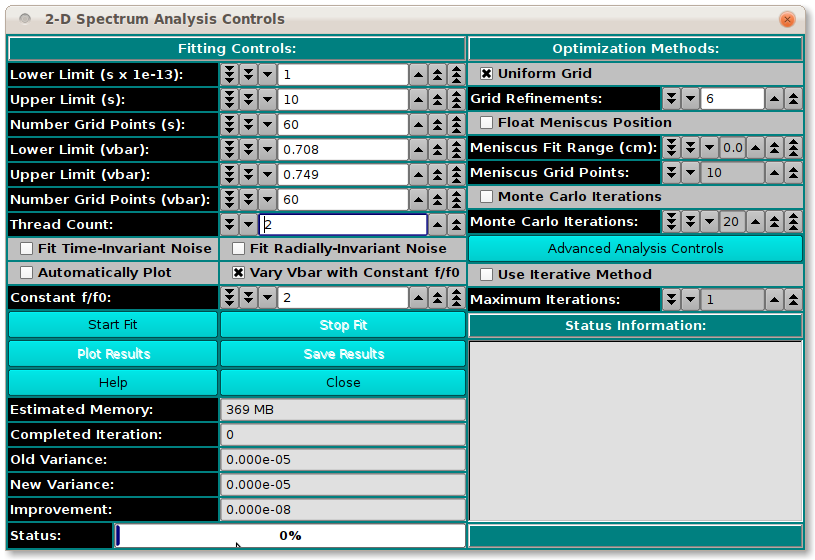

UltraScan Fit Controls for Varying Vbar 2DSA:
This variation of the
2DSA Analysis Control presents
controls for varying vbar while holding frictional ratio constant.
Sample Control Dialog:

Functions Specific to Varying Vbar:
-
Lower Limit (vbar): Set a lower limit of vbar values
to scan. The default is a little below the current experiment
vbar value.
-
Upper Limit (vbar): Set an upper limit of vbar values
to scan. The default is a little above the current experiment
vbar value.
-
Number Grid Points (vbar): Set the total grid count of
vbar points.
-
Constant f/f0: Specify by counter the constant frictional
ratio to use while varying the vbar values.
 Manual
Manual